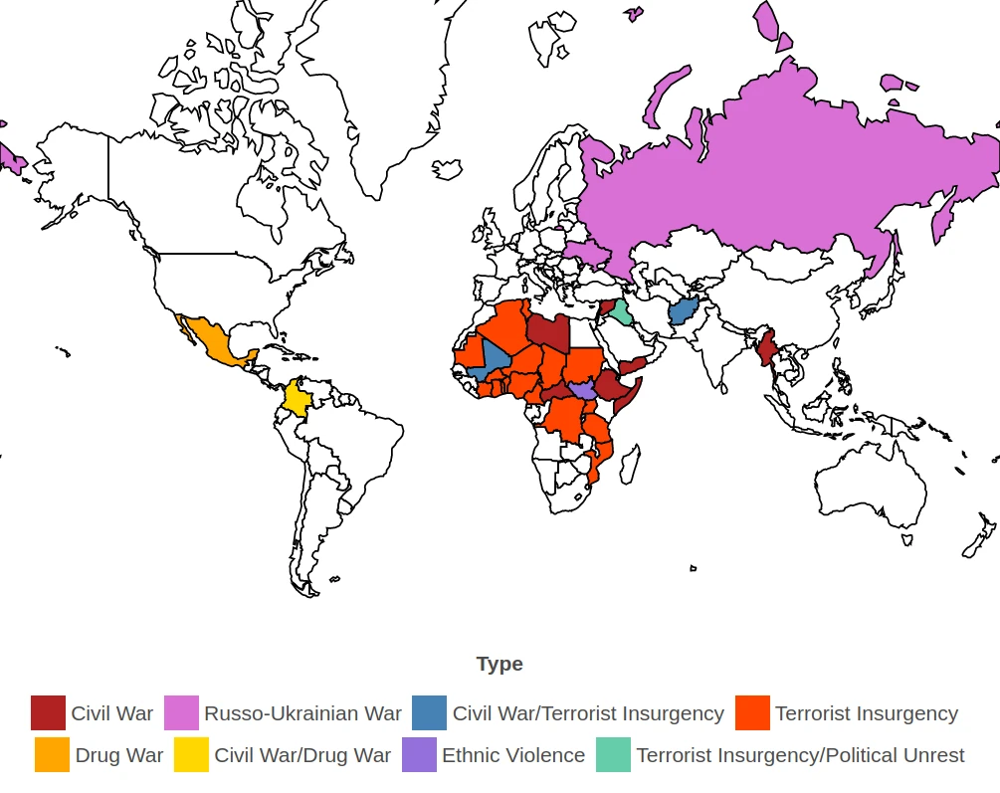

Principais desafios da ONU
Os principais desafios da ONU incluem a paralisia decisória no Conselho de Segurança, a ineficiência na resolução de conflitos devido à divergência de interesses entre os Estados-membros, a dificuldade em garantir o cumprimento do direito internacional e dos direitos humanos, e a necessidade de adaptação a crises contemporâneas como as mudanças climáticas e pandemias. Outros desafios envolvem questões estruturais, como a falta de representatividade no Conselho de Segurança, e a busca por consenso em um cenário de polarização mundial.
